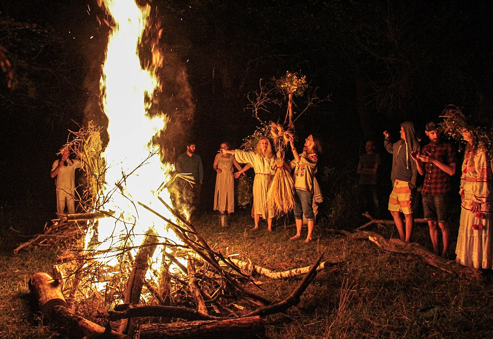
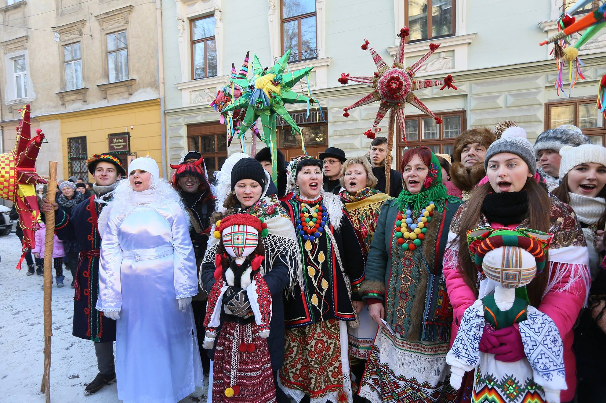
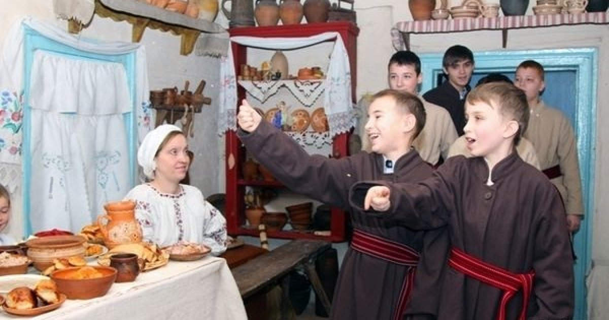
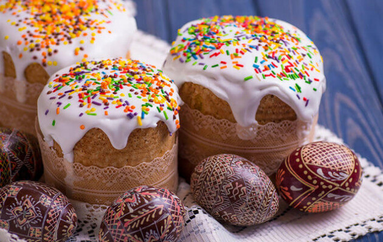

Ukrainian Culture
Historical Context
Due to the difficulties in Ukraine's historical life, folk culture played a particularly significant role in preserving Ukrainian customs. Because the feudal nobility adopted Catholicism and Polish culture, and later the top of the Cossack elite was Russified, Ukrainian society developed for the most part without a full-fledged national cultural nobility. Therefore, the true creators and bearers of culture continued to be the broad masses of society – peasants, Cossacks, and artisans.
Key Folk Customs

Ivan Kupala
A traditional holiday of the Eastern Slavs tied to the summer solstice, when the sun is at its highest point in the sky. The quintessence of the holiday is evening and night purification with the help of fire and water – an ancient form of magical actions.

Koliada and Shchedruvannia
Koliada is an ancient custom of Christmas and processions with the performance of congratulatory songs (koliadky) with the aim of announcing the good news – the birth of Jesus Christ and wishing their hosts health and prosperity. Shchedruvannia is a similar custom of New Year's processions.

Sowing Tradition
After the Shchedruvannia, on the first day of the New Year, sowers traditionally go in the morning, sowing grain into the homes of relatives, neighbours, and acquaintances. All sowers receive a monetary reward, which they keep for themselves or give part of it to the church.

Easter Ritualism
In the folk life of Ukrainians, Easter clearly retains elements of pagan spring ritualism: baking ceremonial pastries, dyeing eggs, dancing, honouring ancestors, and agrarian-magical rites. A painted egg is called pysanka, and it also carries a lot of cultural value.
Traditional Clothing
The most famous Ukrainian clothing items are the embroidered shirt (vyshyvanka), a cloth sash, and a flower crown. Traditional clothing differentiated people by gender and social status, by place of residence, and by wealth.
Vyshyvankas are typically made from hemp or linen and differ significantly between regions, in both cut and decor. Sashes were used as symbols of fertility, libido, and child-bearing, as well as a representation of protection, unity, and connectedness. Flower crowns (vinok) is an ancient pagan talisman, used in the winter holiday season and other rituals.
Literature
Even during the era of Ukrainian language oppression, many Ukrainian artists managed to write and publish their own works. The most famous Ukrainian poet and national hero of Ukraine is Taras Shevchenko. The main idea of his poems was a call for the Ukrainian people to rise up and end oppression. You can read the translation of his famous poem, "Testament" ("Zapovit").
A representative of Ukrainian literature, who had a significant influence on all world literature, was Mykola Gogol. Gogol was born in the Ukrainian Cossack town of Sorochyntsi, and, although he wrote in Russian, he considered himself Ukrainian, and his works were influenced by his Ukrainian upbringing.
The most tragic period in the history of Ukrainian literature was the period of the Executed Renaissance. It was a generation of Ukrainian poets, writers, and artists of the 1920s and early 1930s who lived in the USSR and were killed by the Soviet regime. Different sources indicate that 228 of 260 Ukrainian writers were deported, imprisoned or shot.
Visual Arts
The leading genres of early Ukrainian fine art were mosaic, icon painting, and other church art. The heyday of secular portrait painting occurred in the second half of the 18th century, and the transition to realism occurred in the 19th century. The development of painting in Ukraine at the beginning of the 20th century took place in the struggle of artistic trends and directions. Ukrainian painting of the 60s-80s of the 20th century was characterized by negative tendencies of the party dictate of socialist realism, which imposed the populist academic style of the 19th century, propagandism and dogmatism.
Ukraine gave the world the work of such artists as Ilya Repin, Kazimir Malevich (the author of the famous “Black Square”), and Ivan Aivazovsky (who was an Armenian but lived and painted in Ukraine). Repin's "Reply of the Zaporozhian Cossacks" became one of the masterpieces of Ukrainian fine art. The painting depicts an event in 1678, when a group of cossacks supposedly amused themselves by drafting a highly insulting letter to the Turkish sultan, addressing him as "The Grand Imbecile".
Music
Ukrainian music is also very diverse, represented by a variety of both folk and professional compositions. Ukrainians have a wealth of folk instruments and a well-developed tradition of instrumental and choral music.
The most prominent Ukrainian classical composer is Mykola Lysenko with a repertoire that includes operas, art songs, choral works, orchestral and chamber pieces, and a wide variety of solo piano music.
Volodymyr Ivasiuk, who wrote "Chervona Ruta" – one of the most popular Ukrainian songs to date – worked in the 1970s, until he was killed by soviet secret police.
The most famous contemporary Ukrainian band is Okean Elzy (can be literally translated as "Elsa's Ocean"), who began their career in the late 1990s and became the voice of many generations of Ukrainians.
Dance
There are many Ukrainian dances, but the most popular of them is Hopak. Hopak is a Ukrainian folk dance originating as a male dance among the Zaporozhian Cossacks, but later danced by couples, male soloists, and mixed groups of dancers. The hopak is often popularly referred to as the "National Dance of Ukraine".
At first, hopak was performed only by male participants, as the dance took place in an all-male environment. The performers were not professional dancers. The dance steps performed were predominantly improvisational, reflecting the performers' sense of manliness, heroism, speed and strength.